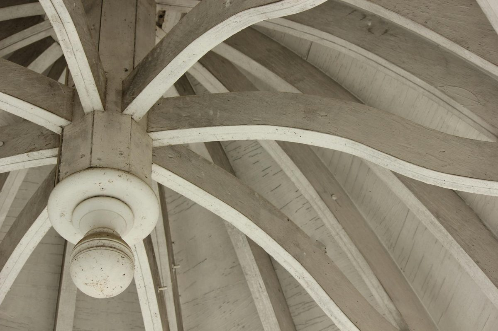

Open cell spray foam is a soft, vapor-permeable polyurethane foam with roughly R-3.5 per inch, the default choice for Knoxville attics and interior walls. Typical installed cost in Knoxville runs $1.50 to $5.00 per square foot, with open cell at the lower end of that range. The process is a free in-home assessment, a written quote, foam application that expands to fill cavities, and a 24-hour cure before re-entry. See the Knoxville pricing guide for a full breakdown.
Open cell spray foam insulation is the most common choice for Knoxville attic and interior wall projects in 2026. With an R-value of about 3.5 per inch, full cavity fill in a single pass, and a price point roughly half of closed cell, open cell foam delivers excellent air sealing and thermal performance at a budget that works for typical East Tennessee homes. Your Knoxville spray foam team sprays open cell foam on residential retrofits, new construction, and small commercial projects daily.

Open cell spray polyurethane foam (ocSPF) is a low-density (about 0.5 lb per cubic foot) spray-applied foam that expands rapidly when sprayed and cures into a soft, flexible insulation. The cells within the foam are deliberately broken open during the chemical reaction, leaving the foam vapor-permeable, soft to the touch, and excellent at filling irregular cavities. Open cell expands roughly 100 times its liquid volume, completely filling a stud bay or rafter space in a single pass.
Open cell foam was originally developed as a more cost-effective alternative to closed cell for residential framing applications. In Knoxville and across IECC Climate Zone 4A, open cell has become the default choice for attic spray foam because the vapor-permeable nature allows any moisture that does get into the assembly to dry outward through the foam rather than getting trapped.
Open cell spray foam in Knoxville costs $1.50 to $3.50 per square foot installed in 2026, depending on thickness. A typical Knoxville attic install at code R-49 (about 14 inches of open cell) runs $2.50 to $3.50 per square foot. For a 1,500 square foot Knoxville home, that is a $3,750 to $5,250 attic job. Stud-bay open cell at 3.5 to 5 inches in interior walls runs $1.50 to $2.25 per square foot.
Open cell pricing scales with thickness because the cost is mostly chemical. Knoxville pricing tends to land mid-range for the Southeast US - higher than rural Tennessee, lower than Nashville and Atlanta metro. Removing existing fiberglass adds $0.50 to $1.00 per square foot to most retrofits.
| Application | Typical Knoxville Cost |
|---|---|
| Attic (1,500 sq ft home) at R-49 | $3,750 - $5,250 |
| Interior wall sound dampening | $1.50 - $2.25 per sq ft |
| Whole home retrofit | $6,000 - $14,000 |
| New construction | $1.50 - $2.50 per sq ft |
Open cell wins on cost-per-R and works well anywhere vapor barrier is not required. Closed cell wins on R per inch, vapor barrier, and structural strength. For most Knoxville attic jobs, open cell is the right call. For most Knoxville crawl space jobs, closed cell is the right call.
| Property | Open Cell | Closed Cell |
|---|---|---|
| R-value per inch | ~3.5 | ~7.0 |
| Density | ~0.5 lb/cu ft | ~2 lb/cu ft |
| Vapor barrier | No | Yes |
| Sound dampening | Excellent | Moderate |
| Cost per sq ft | $1.50 - $3.50 | $3 - $5 |
| Best for in Knoxville | Attics, interior walls | Crawl spaces, rim joists |
See our full open vs closed cell comparison for Tennessee homes for more.
Knoxville and the surrounding East Tennessee region sit in IECC Climate Zone 4A. The 2021 IECC recommends R-49 in attics for this zone. Open cell foam achieves this at about 14 inches, which fits comfortably in a typical 2x12 rafter bay or in an unvented attic conversion. The vapor-permeable nature of open cell is a feature, not a bug, in Knoxville - if a small roof leak develops, water can dry through the foam rather than getting trapped against the deck. TVA EnergyRight rebates and the federal IRA tax credit apply to qualifying open cell installs in Knoxville. We pull all available paperwork during the quote.